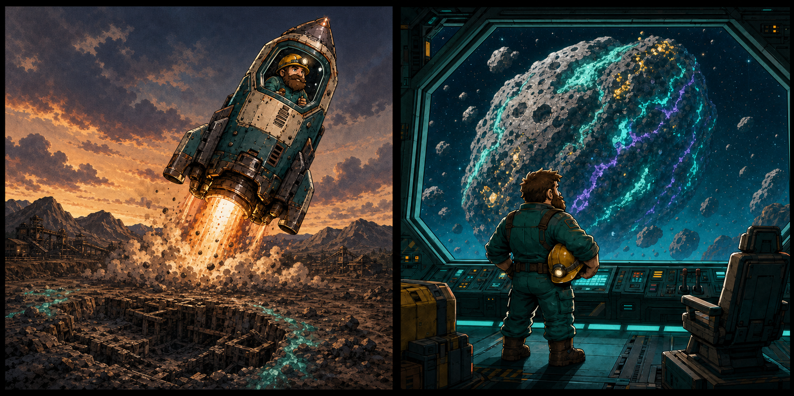

СИЛЬНАЯ СТОРОНАЧУТЬЁ НЕ ПРОСТАИВАЛО
86% смены рядом была доступная цель.
ЭКСПЕДИЦИЯ 0
Шесть секунд. Одна кирка.
Бесконечная порода под ногами.
Enter начать забег
ОТЧЁТ ЭКСПЕДИЦИИ
Время вышло. Всё добытое поднято на поверхность.
86% смены рядом была доступная цель.
Передвижение заняло 31% полезного времени.
Янтарь дал 42% ценности при 18% находок.
U мастерская • Enter новый забег
ПОДЗЕМНАЯ МАСТЕРСКАЯ
Попробуйте изменить запрос или категорию.
ЭПИЛОГ // РЕЙС 01

01 «Руда закончилась. Но путь — только начался.»
02 «Грузовой рейс 01. Новый астероид. Новая жила.»
АРХИВ ЭКСПЕДИЦИИ
Изучайте найденные породы, сравнивайте плотность и готовьтесь к следующим ярусам.
⌾ Наведите на образец для краткой сводки.
Мягкая проводящая жила. Основа первых модулей.
Хрупкие тёмные пласты, полезные для зарядов.
Плотная руда для усиленных инструментов и корпуса.
Редкие линзы с высоким отношением ценности к массе.
Достигните глубины 430 м и добудьте первый фрагмент.
Глубина и свойства образца пока не определены.
DEV // ЛОКАЛЬНАЯ ТЕЛЕМЕТРИЯ
Повторяемые симуляции прогрессии, не меняющие руду и прокачку игрока.